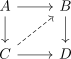
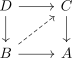

left lifting property as right lifting property in the opposite category
1. Proposition
Let  be a category and
be a category and

be a lifting problem and

the same diagram in the opposite category
Then a lift of one diagram is presicely a lift of the other diagram
2. Proof
Definitions